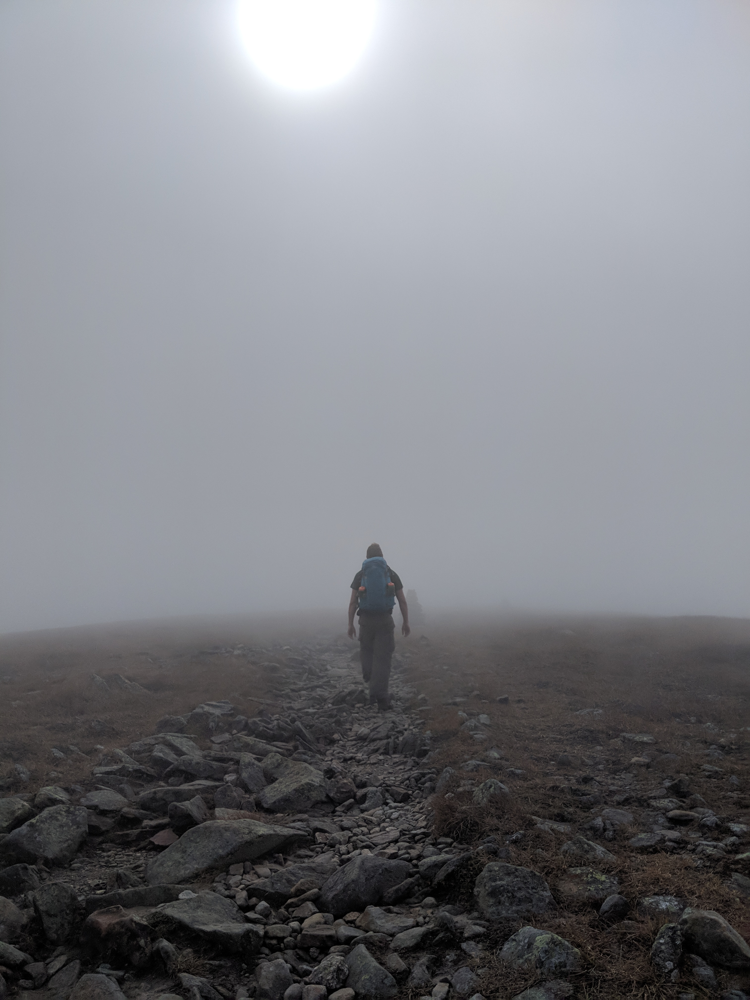
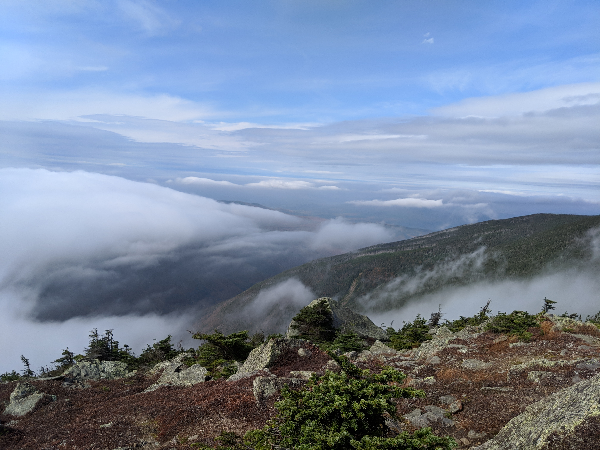
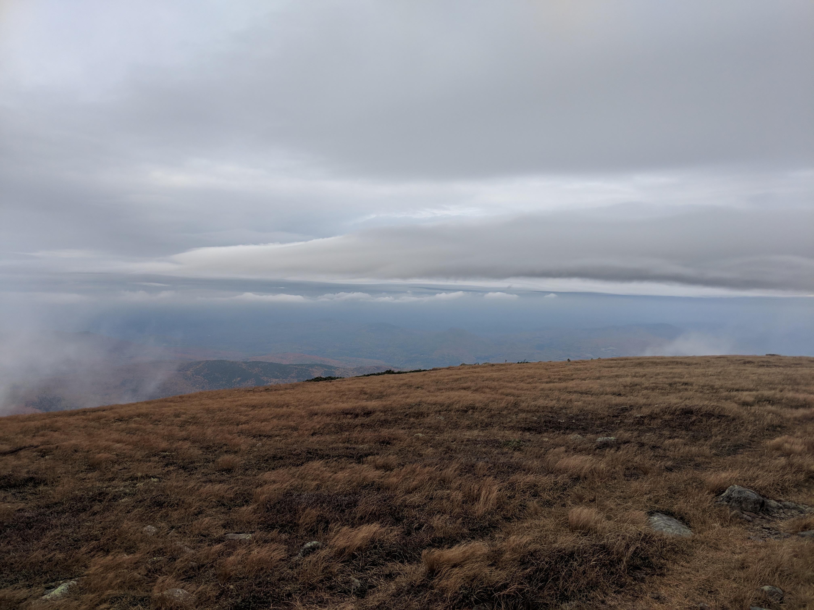

Distance
Distance Elevation
Elevation Observed Wildlife
Observed Wildlifeto
Moosilauke was a fun easier ovrnight hike in the Whites. The climb was steep but we were able to drop our packs a thousand feet below the summit at a site near Beaver Brook Shelter. We stopped so frequently to absorb the beauty of Beaver Brook Falls that the climb did not feel too strenuous. We finished out ascent to Moosilauke after setting up camp and explored the bare summit of this peak. South peak offered some vistas that we enjoyed in between clouds.





